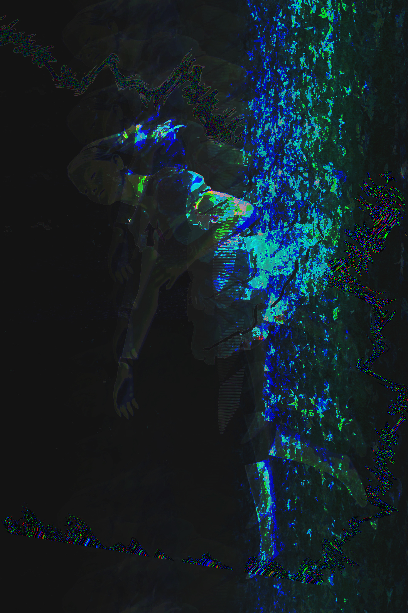

Glitch Art.


These images were made from PNGs that contain differnetly modified source code to produce new effects. The first image is a corrupted Alice in Wonderland photo. This was created partially with the use of text edit, then Audacity to maximize the glitches. The second image, "everyone disliked that" was made with the use of a text editor with certain chunks of image code replaced with "dislike". This corrupted the image just enough to change the visuals but retain the stability of the file. The third image is of a tiara and was edited in app called Audacity that enabled the image's source code to be turned to an audio file which was distorted using echoes and volume edits, and was then transferred back to an image.